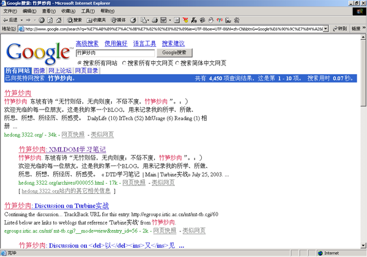

竟是第一个命中！
今天见到Luke Hutteman 在写网志说用google搜luke他得了第一，我顺手搜了一下"竹笋炒肉",WOW！也是个第一个啊。
Luke的另一篇文章解释说"google喜欢用名来检索blog"，我想可能是我无意中使用了一个不很常见的词组作了名字，又很幸运地用了汉字，结果google把"竹笋炒肉"当作我的名了吧。
这使我想起另一个问题，就是关于blog命名的问题。直接把自己的名字写在weblog上，叫做"某某的blog"，似乎很不符合东方人含蓄的性格，所以所见的中文blog，很少见以自己的大名命名如“车东”，最多也是用自己的英文名字或汉语拼音如keke、xiuli、Jedi等，更常见的是blog的名字与自己的毫无联系，如本站的"竹笋炒肉",如"刻事录",“cat@lady”等。这样一来，用人名搜索blog时，东方人可要吃亏了。：)
Erik Porter指出google更喜欢名字本身，难道google也喜欢东方美食？
这里可以当自助链接呢，我找到这，当自助链接用，主人可是会有意见？
Posted by: 911 at January 17, 2004 03:19 AM词是因为比较偏僻啦，不过文章不错。
顺路走过，随口说说。
但是难度大的关键词就不好排了，比如服装 我们现在排的还不好 以后争取第一
Posted by: 服装 at January 15, 2004 03:54 PM不错
Posted by: 网络营销 at January 15, 2004 03:52 PM一般这么冷僻的词 只要在TITLE里写上 就可以排第一了
Posted by: bamboo handles handbag handles wooden handles at January 15, 2004 03:52 PM其实，我觉得你起这样一个名字也好！
我每次都是用这个名字来找你的网站！
你的域名我多没有记住！
感觉很奇怪.
Posted by: gxwindows at January 12, 2004 09:42 AM查hello也不知道排到那去呢。
Posted by: hello88 at December 21, 2003 09:12 PM哈哈，用Google查Keke，不知道排到什么地方去了！
Posted by: keke at August 6, 2003 03:38 PM